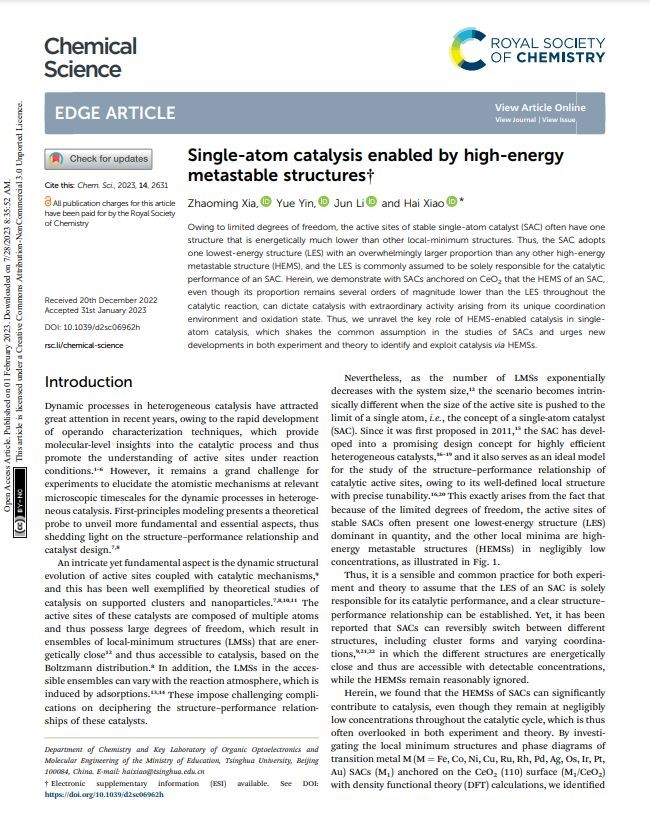

2023
- Potential-dependent transition of reaction mechanisms for oxygen evolution on layered double hydroxides
- Wang, Z.; Goddard, W. A., 3rd; Xiao, H.
- Nat Commun 2023, 14 (1), 4228

- Boosting Efficient and Sustainable Alkaline Water Oxidation on W-Coooh-TT Pair Sites Catalyst Synthesized via Topochemical Transformation
- Wang, L.; Su, H.; Tan, G.; Xin, J.; Wang, X.; Zhang, Z.; Li, Y.; Qiu, Y.; Li, X.; Li, H.; Ju, J.; Duan, X.; Xiao, H.; Chen, W.; Liu, Q.; Sun, X.; Wang, D.; Sun, J.
- Adv Mater 2023, e2302642

- Grand Canonical Ensemble Modeling of Electrochemical Interfaces Made Simple
- Xia, Z.; Xiao, H.
- J Chem Theory Comput 2023

- ???
- Y PAN
- ???

- Inverted Region in Electrochemical Reduction of CO(2) Induced by Potential-Dependent Pauli Repulsion
- Liu, L.; Xiao, H.
- J Am Chem Soc 2023, 145 (26), 14267-14275

- Atomic defects engineering on Fe-N4 sites for boosting oxygen reduction by in-situ ZnO thermal etching strategy
- Wei, S.; Li, L.; Li, A.; Zhang, L.; Hu, H.; Pang, D.; Zhang, Q.; Xiao, H.; Chen, W.
- Chemical Engineering Journal 2023, 465

- ???
- Z ZHang
- ???
- Tailored Cl(-) Ligation on Supported Pt Catalysts for Selective Primary C-H Bond Oxidation
- Ma, C.; Yang, C.; Zhuo, H.; Chen, C.; Lu, K.; Wang, F.; Shi, Z.; Xiao, H.; Song, M.; Jiang, G.
- J Am Chem Soc 2023, 145 (19), 10890-10898

- Stabilizing Copper by a Reconstruction-Resistant Atomic Cu-O-Si Interface for Electrochemical CO(2) Reduction
- Tan, X.; Sun, K.; Zhuang, Z.; Hu, B.; Zhang, Y.; Liu, Q.; He, C.; Xu, Z.; Chen, C.; Xiao, H.; Chen, C.
- J Am Chem Soc 2023

- Highly Strained Oxygen-Doped Chiral Molecular Belts of the Zigzag-Type with Strong Circularly Polarized Luminescence
- Chen, J. H.; Jiang, Z. Y.; Xiao, H.; Tong, S.; Shi, T. H.; Zhu, J.; Wang, M. X.
- Angew Chem Int Ed Engl 2023, 62 (15), e202301782

- Single-atom catalysis enabled by high-energy metastable structures
- Xia, Z.; Yin, Y.; Li, J.; Xiao, H.
- Chem Sci 2023, 14 (10), 2631-2639

- Heterogeneous Iridium Single-Atom Molecular-like Catalysis for Epoxidation of Ethylene
- Yang, H.; Wang, X.; Liu, Q.; Huang, A.; Zhang, X.; Yu, Y.; Zhuang, Z.; Li, G.; Li, Y.; Peng, Q.; Chen, X.; Xiao, H.; Chen, C.
- J Am Chem Soc 2023, 145 (12), 6658-6670

- Surface Water as an Initial Proton Source for the Electrochemical CO Reduction Reaction on Copper Surfaces
- Shao, F.; Xia, Z.; You, F.; Wong, J. K.; Low, Q. H.; Xiao, H.; Yeo, B. S.
- Angew Chem Int Ed Engl 2023, 62 (3), e202214210

- Computational Prediction of Graphdiyne-Supported Three-Atom Single-Cluster Catalysts
- Liu, J.-C.; Xiao, H.; Zhao, X.-K.; Zhang, N.-N.; Liu, Y.; Xing, D.-H.; Yu, X.; Hu, H.-S.; Li, J.
- CCS Chemistry 2023, 5 (1), 152-163

- Enzyme-metal-single-atom hybrid catalysts for one-pot chemoenzymatic reactions
- Li, X.; Cao, Y.; Xiong, J.; Li, J.; Xiao, H.; Li, X.; Gou, Q.; Ge, J.
- Chinese Journal of Catalysis 2023, 44, 139-145